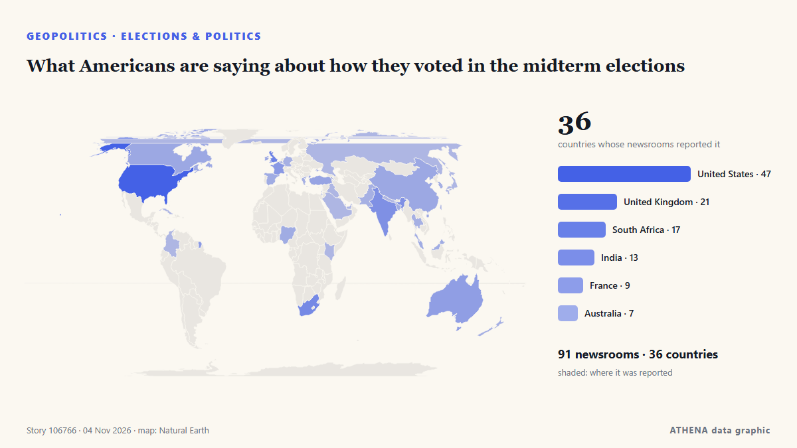

What Americans are saying about how they voted in the midterm elections

Pope Leo XIV, the Catholic Church's first US-born pontiff, has voted in the United States midterm elections, submitting his mail-in ballot in Chicago, the Vatican confirmed. from RTÉ News
Reported independently by 92 outlets in 36 countries since 30 Oct, first by NPR; coverage is at its peak. ATHENA rates the risk moderate (3.2/10), driven mainly by the severity of the harm described and its geographic and sector reach. Confidence is 89% (high), with 92 independent outlets corroborating it and an average source reliability of 72%. Outlets by country: South Africa (10), United States (9), United Kingdom (3). Coverage: 30 Oct to 2 Nov, 76 hours.
Why it matters: Security and diplomatic developments can shift alliances, trade and markets well beyond the countries directly involved.
What changed: 53 new reports from 41 outlets in the 24 hours to 4 Nov.
First reported as: Pope Leo XIV votes in US midterm elections, says Vatican
At a glance
Selected, scored and written by ATHENA's published methodology. No editor intervenes in individual events. How this is produced ›
| 30 Oct 09:00 UTC | 3 |
|---|---|
| 30 Oct 15:00 UTC | 0 |
| 30 Oct 21:00 UTC | 0 |
| 31 Oct 03:00 UTC | 0 |
| 31 Oct 09:00 UTC | 1 |
| 31 Oct 15:00 UTC | 0 |
| 31 Oct 21:00 UTC | 0 |
| 01 Nov 03:00 UTC | 1 |
| 01 Nov 09:00 UTC | 5 |
| 01 Nov 15:00 UTC | 4 |
| 01 Nov 21:00 UTC | 3 |
| 02 Nov 03:00 UTC | 10 |
| 02 Nov 09:00 UTC | 16 |
| 02 Nov 15:00 UTC | 18 |
| 02 Nov 21:00 UTC | 11 |
| 03 Nov 03:00 UTC | 20 |
| 03 Nov 09:00 UTC | 40 |
| 03 Nov 15:00 UTC | 27 |
| 03 Nov 21:00 UTC | 20 |
| 04 Nov 03:00 UTC | 2 |
| 04 Nov 09:00 UTC | 3 |
| 03 Nov 02:56 UTC | 2.1 |
|---|---|
| 03 Nov 10:44 UTC | 3.3 |
| 03 Nov 11:00 UTC | 2.6 |
| 03 Nov 12:55 UTC | 3.5 |
| 04 Nov 08:37 UTC | 3.9 |
| 04 Nov 16:02 UTC | 3.2 |
| 04 Nov 16:02 UTC | 3.2 |
Why these numbers
Importance
Risk
Confidence
The reporting — who reported it, and when
headline as published · opens the original- NPR · United StatesDemocrats seek to weaken the Republican lead in state legislatures
- The Canadian Press (via CityNews) · CanadaPope Leo XIV has become the first pope in history to vote in a US general election
- RTÉ News · IrelandPope Leo XIV votes in US midterm elections, says Vatican
- BBC News · United KingdomCCTV and zip ties: How US mail-in votes are secured and counted
- The Kathmandu Post · NepalFour Nepali Americans seek seats in three US state legislatures
- Indian Express · IndiaAs America goes to vote, on the ballot are affordability and the corrupt Epstein class
- The Hill · United States2028 hopefuls with the most riding on the midterms
- The Straits Times · SingaporeExplainer-How US news organizations will make midterm race calls
- The Hindu · IndiaElderly, vulnerable voters overcome odds to vote in Municipal elections
- The Hindu · IndiaElderly voters brave Vijayawada’s blistering heat to cast ballots
- France 24 English · FranceData centres on the ballot: could the AI infrastructure shape US midterms?
- Taipei Times · TaiwanDo not let algorithms decide the elections
- The Straits Times · SingaporeExplainer-How Trump’s noncitizen voter lists could affect the midterms
- The Conversation (global) · AustraliaNearly all Americans believe corruption is a problem. But will it decide the midterm elections?
- Daily Maverick · South AfricaCONGRESS IN THE BALANCE: A blue tsunami, a tide, or chaos as usual — the US midterm election
- BBC Business · United KingdomNorth Carolina voters weigh up Trump's track record on cost of living
- The Hill · United StatesNewsom on possible Democrat 'tsunami' on Election Day: 'That's a word I haven't used lightly'
- IOL · South AfricaLGE 2026: SANDF on standby as police warn of tough action against election disruptions
- Al Jazeera English · QatarUS midterms: What to know about independent voters and candidates
- The Daily Star — page reader · BangladeshHow Trump’s noncitizen voter lists could affect the midterms
- Havana Times · CubaWho Is a US American? Abdul El-Sayed on Identity & Politics
- ABC News Australia · AustraliaLand of the free, home of the bill shock. This is life in Trump's America
- IOL · South AfricaLGE 2026: Hlabisa urges 29.2 million registered voters to cast ballots as special voting begins
- France 24 English · FranceMidterms 2026: Georgians on the front lines of the people’s war against data centres
- SABC News · South AfricaOpinion | Your vote, your voice: Why it matters
- IOL · South AfricaMeth urges employers to accommodate workers voting on November 4
- Sydney Morning Herald · AustraliaFind out how your neighbours voted in 2022 – and what it means for this election
- BBC News · United KingdomWhat are Americans voting for in this election?
- SABC News · South AfricaVisually impaired woman grateful for special voting arrangements
- New York Times Business · United StatesUp in the Clouds With the Pope, It’s Still Commercial
- New York Times Business · United StatesHow The New York Times Is Covering the Midterm Elections
- IOL · South AfricaMartin Meyer urges KZN special voters to turn out for local elections
- The Hill · United StatesFive athletes and sports figures to watch on Election Day
- SABC News · South Africa‘Democratic responsibility of voters doesn’t end at ballot box’
- The Straits Times · SingaporeInside the US Postal Service sprint to deliver millions of ballots by Nov 3
- IOL · South Africa‘We are voting for our grandchildren’: Durban seniors cast special votes
- Mississippi Today · United StatesMarshall Ramsey: Election eclipse
- US Department of Justice news · United StatesJustice Department Announces Charges Involving 63 Individuals for Election-Related Crimes
- IOL · South AfricaIEC investigates after empty ballot boxes stolen at KZN voting station
- Forbes Business · United StatesHere’s Where Data Center Bans Are On The Ballot (Full List)